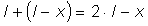

Numim unde coerente undele care îşi menţin nemodificată în timp diferenţa de fază pentru fiecare punct al unui mediu.
Numim unde coerente undele care îşi menţin nemodificată în timp diferenţa de fază pentru fiecare punct al unui mediu.
Interferenţa undelor coerente este staţionară.
C.9. |
Unde staţionare |
Esenţa undei unde este propagarea!
Când însă interferă unde care, într−un punct al mediului, îşi menţin amplitudinile şi defazajul nemodificate în timp, amplitudinea de oscilaţia în acel punct va fi, de asemenea, constantă în timp.
Punctele mediului aflate în maximele de interferenţă oscilează mereu cu amplitudine maximă. Tot aşa, punctele aflate în minimele de interferenţă, oscilează mereu cu amplitudine minimă. Câmpul de interferenţă este staţionar (nu se modifică în timp).
Numim unde coerente undele care îşi menţin nemodificată în timp diferenţa de fază pentru fiecare punct al unui mediu.
Interferenţa undelor coerente este staţionară.
 Provocarea 1C9−1
Provocarea 1C9−1
Un fir este fixat de un capăt, iar celălalt capăt este forţat să oscileze.
Cum te aştepţi să oscileze diferitele porţiuni ale firului?
De la capătul forţat să oscileze se propagă unde în lungul firului. Ajunse la capătul fixat, undele se reflectă şi îşi inversează sensul de propagare.
Pe drumul de întoarcere, undele reflectate întâlnesc unde care sosesc de la capătul care oscilează şi interferă cu acesta.
Într−un punct oarecare P al firului, unda directă parcurge drumul x, în timp ce unda reflectată parcurge, pe traseul dus−întors, drumul (geometric)  (figura 1C9−1).
Fig. 1C9-1. Traseele undelor care interferă într−un fir.
Diferenţa de drum (geometric) pentru undele (reflectată şi directă) care interferă este, aşadar:
Prin reflexie pe un obstacol mai rigid (capătul fixat), unda reflectată îşi modifică brusc faza cu p ("pierde" o jumătate de ciclu), astfel că defazajul undelor care se întâlnesc în P este:

Aşadar, starea de interferenţă a punctului P depinde doar de coordonata x a acestui punct şi nu semodifică în timp − interferenţa este staţionară.
Capătul care oscilează forţat (pentru care x = 0), defazajul faţă de unda reflectată pe capătul fixat este:
Dacă interferenţa este constructivă, amplitudinea de oscilaţie va fi maximă: firul vibrează rezonant. Aceasta se întâmplă doar pentru anumite lungimi ale firului!
 Activitatea experimentală 1C9−1
Activitatea experimentală 1C9−1
Investighează vibraţiile de rezonanţă ale unui fir, folosind mijloace la îndemână.
Pasul 1 Construieşte un ansamblu dintr−un mic motor electric (recuperat de la o jucărie) şi două baterii R6 înseriate.
O soluţie posibilă este prezentată în figura 1C9−2 (motorul a fost fixat în compartimentul becului unei mici lanterne).
Fig. 1C9-2. Dispozitiv pentru investigarea vibraţiei rezonante a unui fir.
Pasul 2 Leagă ansamblul la capătul unui şnur gros, lung de aproximativ un metru. Acesta va fi firul care va vibra rezonant.
Pasul 3 Fixează pe axul motorului o cleăm−crocodil. Când axul motorului se roteşte rapid, fixarea excentrică a cleimei va determina vitraţia amplă a ansamblului − aceasta este sursa de vibraţii de la unul dintre capetele şnurului.
Pasul 4 Ţine de capătul liber al şnurului, astfel încât ansamblul motorului să atârne liber.
Porneşte motorul şi observă ce se întâmplă.
Modifică lungimea firului care atârnă, ţinând mereu din alt loc, până când obţii unde staţionare rezonante.
Pentru anumite lungimi ale firului, capătul inferior vibrează cu amplitudine maximă. Totodată, aspectul firului este de "fus" multiplu, cu unele puncte care oscilează amplu (numite ventre), precum şi alte puncte care nu oscilează deloc, numite noduri (figura 1C9−3).
| Fig. 1C9-3. Ventrele şi nodurile unui fir care vibrează rezonant. |
Provocarea 1C9−2
Cât te aştepţi să fie distanţa dintre un ventru şi nodul vecin al unui fir care vibrează rezonant?
Defazajul undelor care interferă într−un ventru este un multiplu par de p:
iar defazajul în nodul vecin este multiplul impar de p:
Din aceste relaţii, obţii distanţa dintre un ventru şi nodul vecin:
Într−un fir care vibrează rezonant, nodurile şi ventrele se succed regulat, la distanţe egale cu câte un sfert de lungime de undă.
Provocarea 1C9−3
În câte moduri te aştepţi să poată vibra rezonant un fir fixat la ambele capete?
Capetele fiind fixate, acestea nu pot fi decât noduri. Între acestea trebuie să se afle cel puţin un ventru. Acesta este modul fundamental de vibraţie al unui fir fixat la ambele capete (figura 1C9−4).
| Fig. 1C9-4. Modul fundamental de vibraţie rezonantă al unui fir fixat la ambele capete. |
Lungimea unui fir fixat la ambele capete, care vibrează rezonant în modul fundamental, este egală cu o jumătate de lungime de undă.
Condiţia de vibraţie rezonantă este îndeplinită şi pentru configuraţii cu mai multe noduri şi ventre. Acestea sunt moduri armonice de vibraţie rezonantă (figura 1C9−5).
| Fig. 1C9-5. Moduri armonice de vibraţie rezonantă ale unui fir fixat la ambele capete. |
Provocarea 1C9−4
Care te aştepţi să fie relaţia între frecvenţele modurilor armonice şi frecvenţa modului fundamental?
Oricare ar fi modul armonic, lungimea firului este un multiplu al semilungimii de undă (figura 1C9−5):
n fiind 1 pentru prima armonică, 2 pentru a doua ş.a.m.d. (n = 0 pentru modul fundamental).
Dar lungimea de undă este legată de frecvenţa f prin relaţia:
c fiind viteza de propagare a undelor în lungul firului.
Aşadar, frecvenţa modului armonic de ordinul n este:
Astfel, frecvenţa primei armonici (n = 1) este dublul frecvenţei fundamentale f0, iar a celei de−a doua armonici (n = 2) este triplul frecvenţei fundamentale ş.a.m.d. În general,
Frecvenţa oricărei armonici este un multiplu al frecvenţei fundamentale.
Modurile rezonante de vibraţie (cel fundamental şi armonicele) sunt esenţiale pentru toate sistemele oscilante: structurile sunt foarte solicitate în zonele ventrelor şi rămân practic neafectate în zonele nodurilor.
O importanţă specială au aceste moduri rezonante în domeniul instrumentelor muzicale (subiect pe care îl vei întâlni în câteva dintre secţiunile următoare).